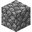
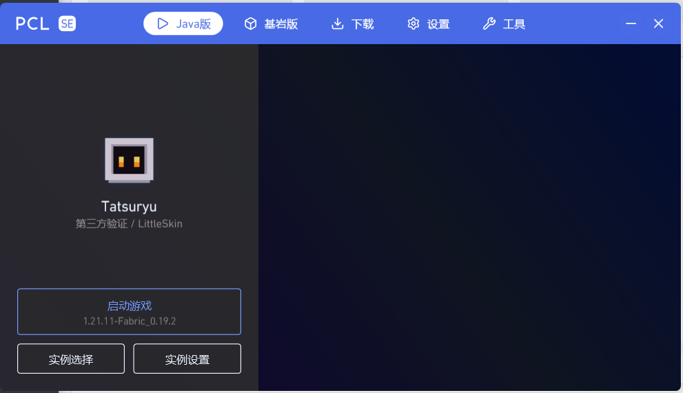

两个世界，一个入口
同时管理 Java 版与基岩版：安装、更新、登录、启动，都在同一套界面里完成，不必来回切换启动器。
Java Edition
就绪

Bedrock Edition 就绪PCL Symbio Edition · Minecraft Launcher
PCL SE 在保留 PCL 熟悉操作的基础上，补齐了基岩版支持、实例管理与资源下载。Java 版与基岩版，从此不必再装两个启动器。
Windows 10 1809 及以上 · 绿色便携 · 不写入系统目录

Features / 功能
把 Java 版、基岩版、资源与存档收进同一套界面。保留熟悉的操作，也补上过去缺少的能力。
同时管理 Java 版与基岩版：安装、更新、登录、启动，都在同一套界面里完成，不必来回切换启动器。

Bedrock Edition 就绪Forge、NeoForge、Fabric 等一应俱全，整合包安装与加载器切换都不用离开启动器。
整合包安装 · 加载器切换 · 自动补全依赖
CurseForge 与 Modrinth 双源检索，六类资源下载后自动放入对应目录。
→ mods→ shaderpacks→ saves每个实例拥有独立的模组、存档、截图与配置，互不干扰。
调难度、开作弊；地图编辑器按区域渲染地形，支持画笔选区、洞穴模式与区块导入导出。
导入 PNG 皮肤，3D 预览支持经典与纤细模型；应用账号、更换披风、重命名与删除，都在一个页面完成。
保留原有交互习惯，页面切换与列表滚动带过渡动画，细节上继续打磨。
简体中文与 English (US) 提供完整界面资源
Bedrock / 基岩版
从识别已安装版本，到导入安装包、Xbox 登录和加载器注入，PCL SE 把基岩版的完整流程做进启动器。
自动区分 UWP 旧版与 GDK 新版，按版本类型筛选。
安装包解包到独立目录，不影响其他版本与存档。
内置登录流程，登录后可直接启动，支持刷新账号。
原版、LeviLamina（按游戏版本自动安装）或随启动器分发的 BLoader。
事务式安装：先解包校验，再整体替换；失败自动回滚，并保留 mods、config 等用户数据。
下载并体验基岩版Download / 下载
最新版本发布于 GitHub Releases。下载、解压、运行——没有安装向导，也不会写进系统目录。
v2.17.13
发布于 2026-11-04 · 框架依赖 · x64
发布包需要预先安装 .NET 10 Desktop Runtime。若使用自包含方式自行构建，则无需额外安装运行时。
Plain Craft Launcher 2.exedotnet publish "Plain Craft Launcher 2/Plain Craft Launcher 2.csproj" -c Release -p:Platform=x64 -p:PublishSingleFile=true -p:DeleteExistingFiles=true -o ./artifact --no-self-containedFAQ / 常见问题
关于项目关系、支持范围与使用方式的说明，都能在这里找到答案。
PCL SE 是从 PCL Community Edition（PCL CE）分支衍生、由 Hydrogen-Peroxide 维护的独立版本，上游基线为 PCL 2.12.1。它与 LTCatt（龙腾猫跃）维护的 PCL2 官方项目、PCL-Community 维护的 PCL CE 官方项目均无隶属关系，请不要向官方仓库反馈 PCL SE 的问题。
不支持。PCL SE 面向 Minecraft 国际版，不提供与「我的世界中国版」相关的任何功能或适配，仅通过经 Mojang Studios 批准的 API 访问国际版服务。
本分支不包含联机大厅功能，相关模块已从代码库中移除，目前没有已确认的恢复排期。实例内的服务器列表与导出功能仍然可用。
官方发布包为框架依赖版本，需要预先安装 .NET 10 Desktop Runtime，并确认系统为 Windows 10 1809（17763）或更高版本。Windows 7 及更低版本不受支持；请始终使用最新版本启动器。
是。启动器为绿色便携版，不会写入系统目录。更新时从 GitHub Releases 下载最新发布包，解压后直接使用即可。
GDK 便携版可按版本选择原版、LeviLamina 或 BLoader：LeviLamina 会按游戏版本通过官方 lip 自动安装，BLoader 随启动器分发并注入。UWP 旧版与 GDK 新版会在版本列表中被区分展示，安装包导入后可解包到独立目录，不影响其他版本。